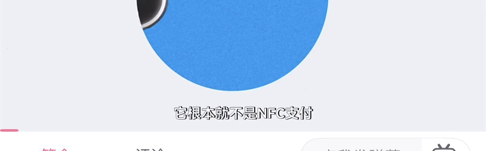

Aoi M
@aoim33
@Light_ASPH @GoogoogagaLiuu 差评君把支付宝的碰一下和 nfc 做过比较
可以看看
【支付宝"碰一下"用了NFC，却不是NFC支付？【差评君】-哔哩哔哩】
https://t.co/mZgdKBdPmv

这灯光漂白了四壁（推友寻回中）
@Light_ASPH
@GoogoogagaLiuu @aoim33 又转移话题，我手机卡不卡影响支付宝碰一碰不是NFC支付吗？？？而且我也有一16p俩16pm啊，都是顶配带AC+，你是不是以为把话题扯向比拼手机就能压我一头了？